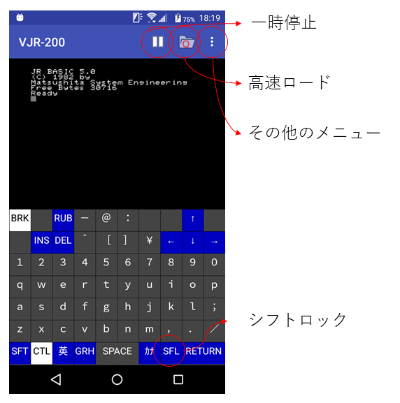
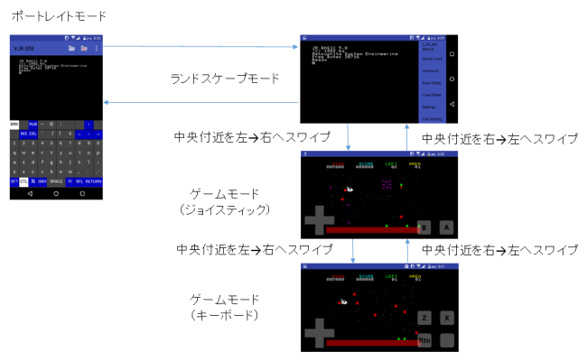
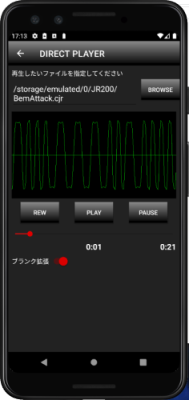

VJR-200 for Android is an emulator of Panasonic JR-200 (Japanese model). English page is here.
いつだって、あなたのそばに JR-200
Android 4.1 以上で動作する JR-200 エミュレータです（Android 4.4 以上を推奨）。
縦画面は単体での使用、横画面は外付けキーボードと組み合わせた使用、またはゲームでの使用を想定しています。
実行環境
ダウンロード
準備編
起動編
操作について
ダイレクトプレーヤーについて
注意点
既知の問題
制作にあたり、Enri さんの解析を最大限利用させていただきました。深く感謝します。また、BSD 三条項ライセンスに基づき以下のソフトウェアを使用させて頂きました。
MAME (http://www.mame.net/)
copyright-holders: Nicola Salmoria, Aaron
Giles
cereal (https://uscilab.github.io/cereal/)
LICENSE
copyright-holders: Randolph
Voorhies, Shane Grant
アイコンについては FLAT ICON DESIGN (http://flat-icon-design.com/) さんのフリー素材を使わせて頂きました。
Android 4.1 以上 （実機での確認は 4.4, 5.1, 6.0, 10.0）
Android 4.4 未満では一部機能に制限があり、ゲームモード時のパフォーマンス劣化が大きいかもしれません。
インストール時、または実行時に要求されるパーミッションはストレージの読み書きとバイブレーション、音声の録音（ダイレクトプレーヤーのみ）です。ファイルの読み書きを拒否すると実行できません。ダイレクトプレーヤーを使わない場合は音声の録音を拒否しても動作します。
アップデートは、新しい apk ファイルを上書きインストールするだけです。設定はそのまま引き継がれるはず。
Bluetooth, USB の外付けキーボード（106, 109系のみ）に対応しています。うまく入力できないときは日本語入力ソフトを変更してみてください（Google 日本語入力→ Gboard など）。
ゲームコントローラには対応していません。
※ VJR-200 for Andorid は Google Play に登録されたアプリではありません。いわゆる「野良アプリ」に関する知識がない方にはお勧めしません。
※ このプログラムは十分な検証がされていません。ユーザー環境に有害な影響を与えるようなことはしていないつもりですが、いかなる損害が生じても当方は一切補償しません。了解の上ご利用下さい。
Android 版のソースコードは公開の予定はありません。
■ APK Binary vjr200-0.6.3.apk (3,995KB)
■ APK Binary vjr200-0.5.1.apk (3,696KB)
■ APK Binary vjr200-0.4.1.apk (3,321KB)
Windows 版と同様に ROM, フォントファイルを用意し、実行させたい CJR, JR2 ファイルとともにスマートフォンに転送してください。転送先には制約があるので注意点を参照のこと。

Windows 版と異なり、外付けキーボード使用時の BREAK キーは F11 に割り当てています。これは Esc キーが OS に使われてしまっているためです（しかもよりによって「戻る」キー）。本当は Disable したいところだけど、可能かどうかもわからないのでそのまま。F12 キーにしようと思ったら、これも OS に使われてた（しかもよりによって「ロック」）。とにかく Esc キーを間違って押さないように気を付けてください。
もひとつ、Bluetooh キーボードなどで OS ごとに切り替えできるタイプの場合は、Windows の設定で試してみてください。Android の設定だとファンクションキーの動作がこちらの意図したものにならないことがあります。
※ ※ ※
VJR-200 for Android には4つのモードがあります。それぞれの遷移は以下の通り。

ダイレクトプレーヤーは CJR, JR2 ファイルを WAV ファイルに変換せずに直接再生することができるユーティリティです。エミュレータとは関係ありません。
ダイレクトプレーヤーを使用するには「音声の録音」の権限が必要です。これは再生波形を表示するため(Visualizer)に必要な権限であり、あなたの生活音を録音しているわけではありません。
必ずボリュームを最大にして試してください。それでも必要な音量を得られない機種が多いようですが、その場合はヘッドホンアンプなどを使うしかありません。
「ブランク拡張」をオンにすると JR2 ファイルに記録されたブランクを5秒に拡張します。あらかじめ記録したブランクでは正常に LOAD 出来ない場合に使用してください。ただし元のファイルにブランクを記録していないと拡張できません。その場合は JR2 ファイルを作成しなおしてください。
古い Android でゲームモードを使うと、パフォーマンスが低下することがあります。対策は設定で「フレームレートを半分にする」をオンにするか、最新機種に買い替えることです。
ゲームモード（キーボード）で入力が暴走することがあります。入力が止まらなくなった時は、十字ボタンのどれかを一度押してください。
設定でゲームモードのコントローラー位置を変更したときは、一度画面を回転させてください。そうしないと反映されません。
プリンタ、デバッグ機能、ローマ字カナ入力
バグ報告、動作報告などは掲示板、またはメールでお待ちしています。メールアドレスはトップページの一番下にあります。
なお Android 版に関しては Windows 版と同程度の機能、互換性を達成しようとは思っていません。あくまで存在することに意義がある程度に考えているのでご了承ください。
［TOP PAGE］